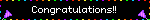
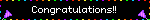

Welcome to my website
Hi! My name is felix and this is my website 🎀
Latest toca boca video

(Home) (Pics) (Videos) (Pinterest) (More) (Straw page)

 



Hi! My name is felix and this is my website 🎀